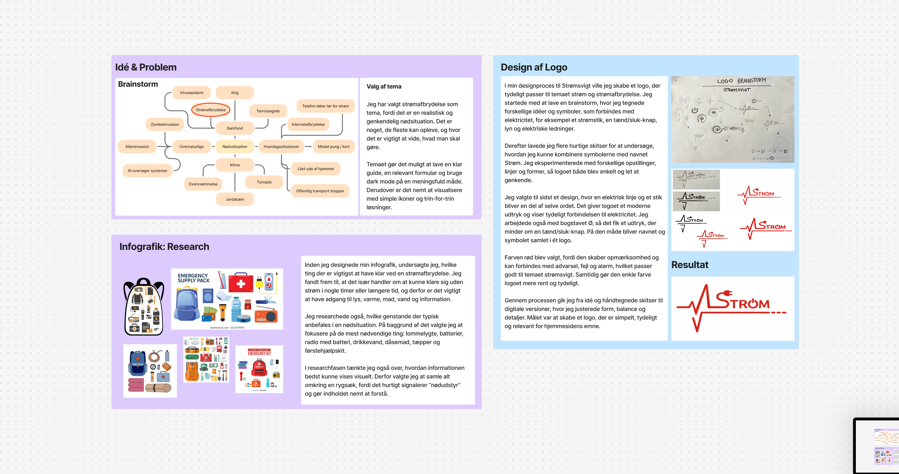
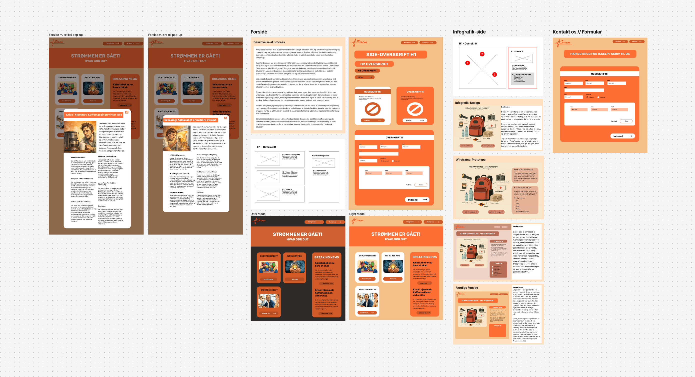

Om temaet
I Tema 4 arbejdede jeg med udvikling af brugergrænseflader og interaktive hjemmesider. Temaet byggede videre på HTML og CSS fra Tema 2, men introducerede også JavaScript og mere avancerede frontend-funktioner.
Jeg lærte, hvordan man kan gøre et website mere dynamisk og brugervenligt ved hjælp af interaktive elementer som formularer, popups, accordions og dark mode. Derudover arbejdede vi med accessibility, så hjemmesiderne blev mere
tilgængelige for forskellige brugere.
Temaet introducerede også logodesign i Adobe Illustrator samt brug af AI-værktøjer til idéudvikling og indholdsproduktion. Det gav mig erfaring med både den kreative og den tekniske del af udviklingsprocessen.
Emergency Site
Som en del af Tema 4 arbejdede jeg med Emergency Site-projektet. Opgaven gik ud på at udvikle et interaktivt website om en selvvalgt nødsituation. Projektet blev bygget op gennem flere delopgaver, som tilsammen skulle ende med et færdigt
website.
Formålet med projektet var at arbejde med brugergrænseflader, JavaScript og interaktive funktioner. Samtidig skulle vi udvikle et visuelt design, der understøttede den valgte nødsituation og skabte en sammenhængende brugeroplevelse.
Projektet var opdelt i flere dele, hvor vi blandt andet skulle udvikle en interaktiv infografik, designe og kode en webformular, bygge en forside og implementere funktioner som dark mode. Undervejs arbejdede vi også med animationer,
accessibility og forskellige JavaScript-løsninger.
I opgaven arbejdede jeg blandt andet med:
- JavaScript, DOM manipulation & Event listeners
- Formularer og validering
- UX/UI
- Accessibility
- Dark mode
- Modals og popups
- CSS-animationer
- Logodesign
- Illustrator
- Responsivt design
- GitHub Pages
Se projekt
Min proces
Jeg startede projektet med at undersøge min valgte nødsituation og indsamle relevant information om emnet. Herefter lavede jeg en problemanalyse og et mindmap for at få overblik over indholdet og de vigtigste problemstillinger, som
hjemmesiden skulle formidle.
For at finde en visuel retning arbejdede jeg med inspirationssøgning, moodboards og farvevalg. Jeg udviklede også et logo i Illustrator, som skulle understøtte temaet og skabe et genkendeligt visuelt udtryk på tværs af hjemmesiden.
Efter researchfasen begyndte jeg at udvikle wireframes og layoutdiagrammer for de forskellige sider. Det hjalp mig med at planlægge sidernes opbygning, navigation og placering af indhold, inden jeg gik videre til det visuelle design.
Derefter designede jeg de forskellige sider i Figma, herunder forsiden, infografik-siden og formularsiden. Undervejs justerede jeg løbende layout, farver og indhold for at skabe en mere overskuelig og brugervenlig løsning.
Da designet var på plads, begyndte jeg at kode hjemmesiden i HTML, CSS og JavaScript. Her implementerede jeg blandt andet formularfunktioner, dark mode, animationer og andre interaktive elementer. Gennem hele processen testede og forbedrede
jeg løsningen løbende for at sikre, at hjemmesiden fungerede på forskellige skærmstørrelser og gav en god brugeroplevelse.
Research & Design af logo

Wireframe & Prototype

Refleksion
Tema 4 gav mig en langt bedre forståelse for samspillet mellem design, frontend-kode og brugeroplevelse. Hvor jeg tidligere primært havde arbejdet med HTML og CSS, fik jeg nu mulighed for at arbejde mere aktivt med JavaScript og interaktive
funktioner.
Jeg oplevede, at JavaScript var mere udfordrende end HTML og CSS, fordi der var flere ting, der kunne gå galt i koden. Til gengæld var det også meget tilfredsstillende at se, hvordan små kodestykker kunne skabe funktioner som dark mode,
popups og accordions.
Temaet gav mig desuden en større forståelse for accessibility og brugeroplevelse. Jeg lærte, at et godt website ikke kun handler om udseende, men også om at skabe en løsning, som er nem at bruge og tilgængelig for forskellige typer brugere.